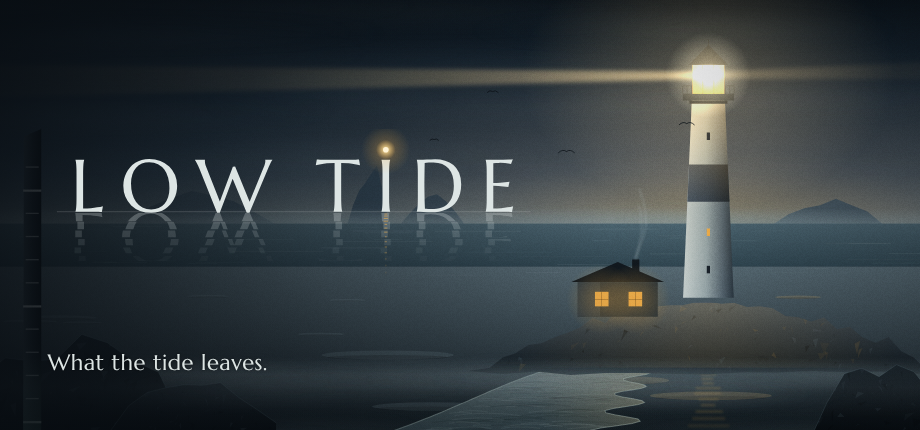

Low Tide is not available yet. Add it to your wishlist and you will hear when it is.
January, 1998. The summer crew has gone and the supply boat will not return until spring. You are Arthur, the winter caretaker of Gannet Rock Light Station, off the coast of Maine. Wind the clockwork that turns the lens, light the lamp, log the weather, keep warm. The island is small, the sea is not, and a single radio ties you to the mainland.
The ocean is the level design. Sandbars to the East Stack and the West Echo Cave open at low water and close again once the tide passes 2.1 metres. Misjudge it and the swell carries you back to the dock, a little colder and 45 minutes poorer. There is no Game Over screen, only Clara having something to say about it.
Each day gets its own tide table, and the low arrives about 50 minutes later every day. Day 4 is a storm and the bars stay shut. Day 5 is a spring low that reaches −0.4 metres and uncovers somewhere that has been under water for years.
Clara's voice comes over VHF Channel 16 and the game never stops for it. Answer with 1 or 2 while you climb, look through the binoculars, or turn over a piece of driftwood. She notices where you are standing, what time it is, and which finds you choose to report or keep to yourself.
West echo cave: red acoustic buoy in the arch. Battery pack still warm. Shouldn't be.
No minimap and no quest markers. You tell the time on a brass pocket watch, plan the day from a paper tide table, check the painted foot marks on the dock pilings, and find your way home by the lighthouse beam through the fog. Assist Mode brings back a simple readout if you want one.
Brew coffee on the cast-iron stove, wind the weights, read the barometer, and light the lamp when the light goes. The cottage is small and loud with wind. The evening log and the evening call are where the day's finds turn into something you can feel.
A canister stamped PROJECT PELAGIC, 1974. A buoy that is still warm to the touch. Cassette tapes recorded by someone who wintered here long before you. Three endings, one truth, and what you tell Clara decides how much of it she tells you.
There are no reviews for this product yet. Reviews open at release.

Winter, 1998. You are the lone winter keeper of Gannet Rock Light Station, off the coast of Maine. The tide decides where you can walk. The only other voice on the island is Clara, a Coast Guard dispatcher on a crackling VHF radio. Seven days. One secret the sea has kept for twenty-four years.
| Interface | Full audio | Subtitles | |
|---|---|---|---|
| English | ✓ | ✓ |
Low Tide is a quiet, cold, lamp-lit game about reading the water. The identity does the same thing. One warm point of light, a waterline, and the reflection that tells you the water is there.
Ink version for paper, press and light backgrounds. The sun goes to Ember so it holds on fog.
The mark. A half sun on a waterline, also a lamp, also a watch face. Used for the Steam client icon and small spaces.
The word space in “LOW TIDE” is the sun. The letters stand on the waterline and their reflection falls below it in thin slices that drift and fade, the way a lamp breaks up on wet sand. The type is Gloock, a high-contrast serif with the weight of a painted sign. The wordmark is outlined, so it never depends on a font.
Keep clear space equal to the height of the L on every side. Below 220 px wide, drop the reflection (low-tide_wordmark_flat.svg). Never recolour the sun, never put the logo on a busy bright area, and never stretch it. On key art, set the logo over dark water, not over the lamp.
Slate, granite and seafoam make the island. Amber appears only where someone is: the lamp, a lit window, the pocket watch, the single button. If amber shows up on a rock, something is wrong.
Proportion on a typical frame: about 5 percent amber, and never more than 10.
Title, headings, taglines. Used sparingly and always large enough to see its contrast.
The east bar closes at a quarter past twelve. Take the glass with you.
Store copy, interface text, captions. Regular and medium only.
LOW 07:30 0.2 m
HIGH 13:42 4.2 m
BARS CLOSE > 2.1 m
Anything the island measures: tide table, radio header, eyebrows. Tabular figures.
Glass 30.1 and steady. Fog, then.
Arthur's logbook only. Never for marketing headlines.
Low Tide talks like a keeper writing a log. It gives the number, the time and the thing seen. It does not promise thrills. The tension is real enough that it never needs announcing.
A horizon or a shoreline sits somewhere in the picture. It anchors the eye and carries the reflection motif.
The lamp, lit windows, the watch. Rocks, sand and sea stay cool. When in doubt, take amber out.
It is the compass in the fog. Nothing else breaks its silhouette, and its beam is always visible in key art.
Depth comes from stacked fog bands. Faceted, flat-shaded rock and a little grain keep it painterly instead of glossy.
If Arthur appears, he is small, seen from behind, and doing something with his hands. Clara never appears. She is a voice.
These previews are the real compositions. Full-resolution PNGs and vector logos are in marketing/steam/assets and marketing/steam/logo. Run node export.mjs in marketing/steam to regenerate them after changing the art.
Steam shows the first 300 characters of the short description on the store page and in search.